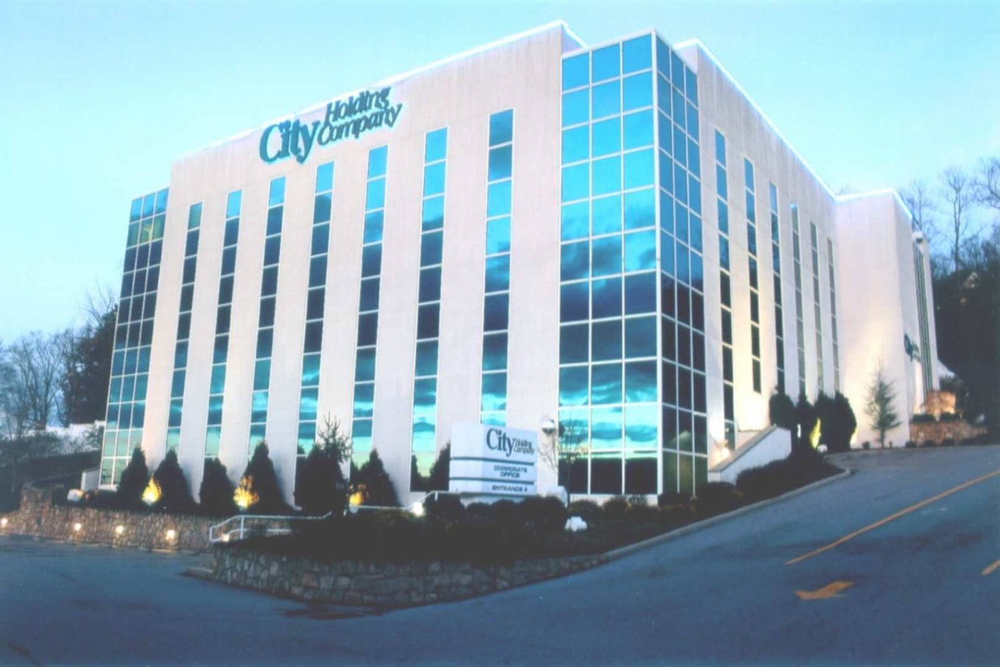

Information Systems Specialist I
IT asset management, security compliance, and cross-functional systems support across 18 WorkForce West Virginia career centers statewide to build the visibility infrastructure and operational workflows that kept a large distributed government workforce running securely and efficiently.
[SCROLL TO EXPLORE]
Visit SiteThe Problem
Managing IT assets, software licensing, and user access across 18 geographically dispersed government career centers is a coordination problem as much as a technical one. Without centralized visibility, hardware went underutilized, licensing costs ballooned, and security and compliance standards were applied inconsistently across locations. There was no single source of truth for asset lifecycle, system usage, or access controls — making risk assessment, remediation, and reporting largely reactive.
What's Included
- Live dashboards and KPIs for IT asset inventory, system usage, and lifecycle tracking across 18 centers
- In-house systems for software licensing and hardware usage tracking
- End-to-end IT asset lifecycle workflows including provisioning, de-provisioning, and end-of-life management
- User access management and periodic access reviews for OSCAR, RAPIDS, WorkForce WV, DMV, and related applications
- Standard operating procedures and user access documentation
- Automated solutions for process improvement and federal/state compliance
- Technical support and training for staff and management across all regional centers
Impact
Increased cross-functional visibility by 70% across all 18 centers and cut approximately $150,000 in costs by replacing third-party tools with purpose-built in-house systems. Over five years, the work evolved from tactical IT support into a foundational compliance and risk infrastructure — one that gave a distributed government agency the asset visibility and access control documentation it needed to meet federal and state program requirements consistently.

Technical Stack
- Google Workspace: file sharing, access forms, and tracking systems
- Microsoft Office: reporting, documentation, and workflow management
- OSCAR: user access management and application maintenance
- OnBase: document management and application support
- Python: automation and process improvement scripting
- SQL: data aggregation across asset inventory and identity systems
- .NET: construction of in-house resume-building software